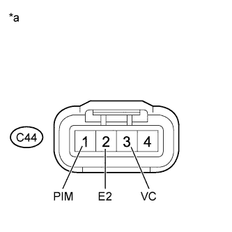

DTC P0107 Manifold Absolute Pressure / Barometric Pressure Circuit Low Input |
DTC P0108 Manifold Absolute Pressure / Barometric Pressure Circuit High Input |
| DTC No. | DTC Detection Condition | Trouble Area |
| P0107 | The manifold absolute pressure sensor voltage is below 0.5 V for 0.5 seconds (1 trip detection logic). |
|
| P0108 | The manifold absolute pressure sensor voltage is higher than 4.5 V for 0.5 seconds (1 trip detection logic). |
|
| MAP | Malfunction |
| Approximately 0 kPa |
|
| 130 kPa or higher |
|
| Frequency of Operation | Continuous |
| 1.READ VALUE USING INTELLIGENT TESTER (MAP) |
Connect the intelligent tester to the DLC3.
Turn the engine switch on (IG).
Turn the tester on.
Enter the following menus: Powertrain / Engine and ECT / Data List / MAP.
Read the MAP value.
|
| ||||
| OK | ||
| ||
| 2.CHECK MANIFOLD ABSOLUTE PRESSURE SENSOR (TERMINAL VOLTAGE) |
|  |
Disconnect the manifold absolute pressure sensor connector.
Turn the engine switch on (IG).
Measure the voltage according to the value(s) in the table below.
| Tester Connection | Switch Condition | Specified Condition |
| C44-3 (VC) - C44-2 (E2) | Engine switch on (IG) | 4.5 to 5.5 V |
| C44-1 (PIM) - C44-2 (E2) | Engine switch on (IG) | 4.0 to 5.0 V |
| *a | Front view of wire harness connector (to Manifold Absolute Pressure Sensor) |
|
| ||||
| OK | |
| 3.REPLACE MANIFOLD ABSOLUTE PRESSURE SENSOR |
Replace the manifold absolute pressure sensor (Click here).
| NEXT | |
| 4.CHECK WHETHER DTC OUTPUT RECURS |
Connect the intelligent tester to the DLC3.
Turn the engine switch on (IG) and turn the tester on.
Clear the DTCs (Click here).
Turn the engine switch off and wait for at least 30 seconds.
Turn the engine switch on (IG) and wait for 5 seconds.
Turn the tester on.
Enter the following menus: Powertrain / Engine and ECT / DTC.
Read the DTCs.
| Display (DTC output) | Proceed to |
| No DTC output | A |
| DTC P0107 and/or P0108 output | B |
|
| ||||
| A | ||
| ||
| 5.CHECK HARNESS AND CONNECTOR (MANIFOLD ABSOLUTE PRESSURE SENSOR - ECM) |
Disconnect the manifold absolute pressure sensor connector.
Disconnect the ECM connector.
Measure the resistance according to the value(s) in the table below.
| Tester Connection | Condition | Specified Condition |
| C44-1 (PIM) - C29-8 (PIM) | Always | Below 1 Ω |
| C44-3 (VC) - C28-16 (VCV2) | Always | Below 1 Ω |
| C44-2 (E2) - C29-7 (E2) | Always | Below 1 Ω |
| Tester Connection | Condition | Specified Condition |
| C44-1 (PIM) or C29-8 (PIM) - Body ground | Always | 10 kΩ or higher |
| C44-3 (VC) or C28-16 (VCV2) - Body ground | Always | 10 kΩ or higher |
|
| ||||
| OK | ||
| ||